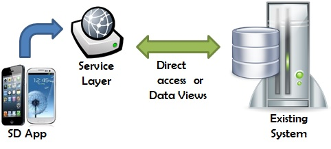

We have a pre-existing web application and need to develop a module for Smart Devices. The KB for the Smart Device application will not create its own database; instead, it will access the pre-existing system database.

Several options are available to implement this access:
- If the pre-existing system wasn’t developed using GeneXus, or we only have access to the database, our only choice is to access the tables through a reverse engineering tool (DBRet) or manually through transactions and Data Views.
- If the pre-existing system was developed with GeneXus and we have access to its Knowledge Base, we can:
- Similarly to the previous case, we can take the transactions of the pre-existing system which are relevant to the SD module, and create them in the new KB (for example, by exporting them from the pre-existing KB and importing them into the KB for SD) with associated DataViews to access the pre-existing database tables (both manually and through the reverse engineering tool).
- Migrate the pre-existing KB to Evolution 2 and create the SD module over that KB (creating parallel transactions and working with the original transactions).
- Centralized data: There is no duplication of data; therefore, there's no need to worry about synchronization programs, maintenance, etc. In addition, when data is accessed from the SD application, the latest data is always returned.
- The pre-existing system doesn’t need to be changed: even if it was migrated before Evolution 2 for some other reason, there's no need to change anything in the pre-existing system. Accessing its database is enough.
- We can have problems mapping the data types of the pre-existing database (since it may not have been created with GeneXus, or it may have been created with an old version of GeneXus) and those handled by GeneXus X Evolution 2; for example, to manage images, videos, files.
- Impacts or changes to the structure of the pre-existing system database may cause the SD application to stop working.
|